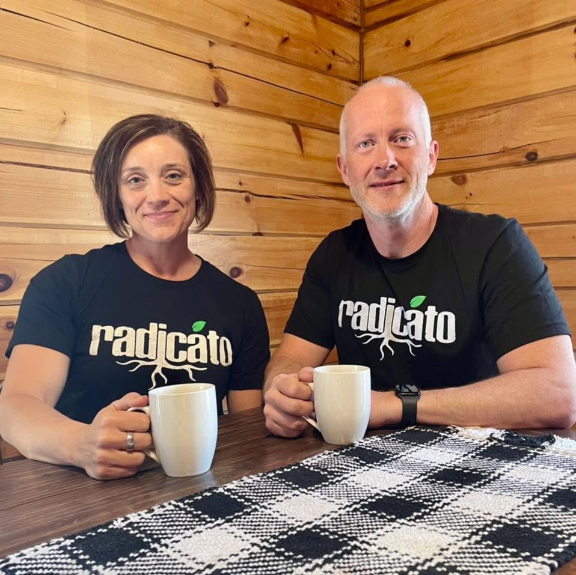

Made fresh weekly · Boone, Iowa
Pre-order weekly meals made with seasonal, local ingredients — ready in your fridge and priced for real life. Pickup Saturday and Sunday in Boone.
Orders close Wednesday 9:00 AM · Pickup Sat 8–10 AM & Sun 5:30–6:30 PM
Simple by design
Fresh lineup drops every week — see what's on for the weekend.
Place your order and pay online. The window closes at 9 AM Wednesday.
Grab your fresh meals on Saturday 8–10 AM or Sunday 5:30–6:30 PM.
Nourishing Boone
Radicáto is like having your own personal chef. We're two locals who cook restaurant-quality meals with seasonal ingredients from Iowa farms, make them just for you, and have them ready for pickup — so "what's for lunch" is answered before you're hungry. Delicious food, made for your fridge, without Ames or Des Moines prices.
Since 2022, we've been cooking out of the basement of Boone First United Methodist Church — and we're proud of the home it's given us. One day soon, we'll be cooking from our very own space in downtown Boone, the Radicáto Kitchen. Until then, we're thrilled to be your go-to for deliciously easy meals, done the Radicáto way.

Fresh, recognizable food — not a mystery list.
Sourcing locally whenever we can, to fuel our own community.
Convenient, nourishing, and affordable. No trade-offs.
What people say
A few words from folks who've made us part of their week.
“I can count on eating healthy delicious food with a wonderful variety that I can't manage on my own.”
“These meals are packed with flavor, fresh vegetables, and protein… a nutritious meal that leaves me feeling great.”
“Radicato is always providing great, high-quality, delicious, and nutritious meal options for our community!”
“Absolutely the best, healthy food I've had in a very long time in Boone!”
Good to know
Radicáto is like having your own personal chef in Boone. We make chef-prepared meals with seasonal, local ingredients — made just for you, ready in your fridge, and priced well below what you'd pay for the same standards in Ames or Des Moines.
Orders open when the week's menu drops and close Wednesday at 9:00 AM. You order and pay online, then pick up that weekend — Saturday 8–10 AM or Sunday 5:30–6:30 PM.
Meals are priced per item on this week's menu. We're deliberately approachable — not the cheapest option in town, but a fraction of what a restaurant doing this with local ingredients would charge you in Ames or Des Moines.
We currently offer weekly pickup in Boone, with the exact location shared when you order. Delivery isn't available right now — ask us if it's something you'd want.
Pickup is in Boone, Iowa. Your order confirmation includes the exact pickup location for that weekend.
Yes — our menu rotates each week and includes vegetarian options. If you have a specific dietary need, email hello@radicatokitchen.com before ordering and we'll help you pick.
You can — and plenty of people do. But this is chef-prepared food with local ingredients, in your fridge before you're hungry, for less than you'd pay for the same thing elsewhere. It's the difference between a meal you settle for and one you look forward to.
Not right now — ordering is online only while we cook out of our current space. Email us any time and we'll help before you place the order.
Meals are cooked fresh each week and hold beautifully in your fridge for 5–7 days. Reheat when you're ready — no planning required.
Find us
Saturday: 8:00 – 10:00 AM
Sunday: 5:30 – 6:30 PM
Boone, Iowa (exact pickup location shared with your order)
Questions about an order? We're happy to help before you place it.